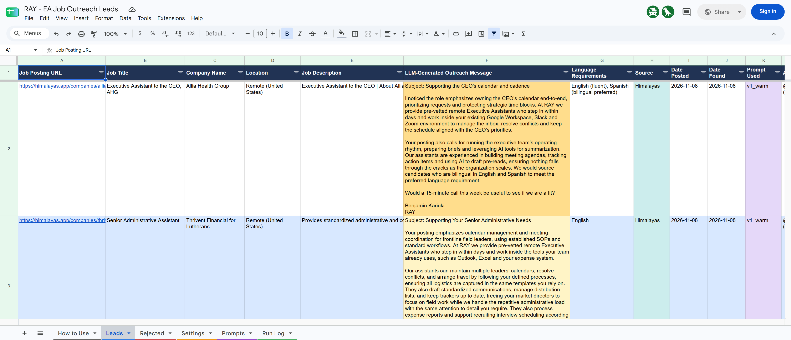
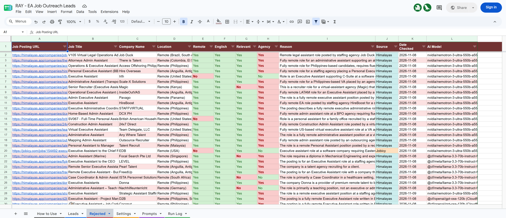

| Code repository | github.com/benjaminkariuki/ray-ai-automation-case-study (both tasks) |
| Requirement checklist | REQUIREMENTS_CHECK.md: every line of the brief, how it's met, where to verify it |
Each task starts with its own links, then what was built, how every requirement is met, and how to verify it.
| Google Sheet (dashboard) | docs.google.com/spreadsheets/d/1GwAt8R3_O-h6ivZ_CT_8yD6GMIdybyf2-YgscTQ9hRI Anyone with the link can view and edit |
| Run it now (optional) | RUN_NOW_URL_TEXT A complementary extra for manual runs. The automation already runs by itself every day (the default); this page only lets you start an additional run on demand, without a GitHub account. |
| Run history | GitHub Actions: the automatic daily runs, plus any manual runs |
| README | task1-job-outreach/README.md |
| Sample output | sample-output/: CSV of each Sheet tab, plus latest/ (console log, JSON, CSV of the newest run) |
A Python pipeline, run automatically every day by GitHub Actions (the default; no one needs to start it), so no server of our own is needed. Each run:
Search terms, filters, AI models and prompts are all edited in the Sheet, so tone can be tested without touching code.
Settings → outreach_prompt to v2_direct.task1-job-outreach/sample-output/ for the CSV/JSON output and the newest run's console log.python task1-job-outreach/scripts/verify_sheet.py; expect 13/13 PASS.| Brief | How it's met |
|---|---|
| ✓ Compliant, non-LinkedIn job board | 3 official public APIs, with no HTML scraping. Each row keeps the original URL and source name (the boards ask for a link back), and requests are paced. |
| ✓ Collect title, company, location, description, URL and language requirements for each posting | All six fields for every scraped posting. Language requirements come from rules for every posting and are refined by the AI for checked jobs. |
| ✓ Store in a structured format | Each run saves JSON (every posting and AI decision), CSV (all postings, leads, rejections) and a console log, plus the Google Sheet. |
| ✓ Remote + English + relevant; keep only postings meeting all three | The LLM returns strict JSON with a reason. Only all-three passes become leads; the rest go to the Rejected tab with Yes/No per check. Staffing and VA agencies (competitors) are also excluded, which is configurable. |
| ✓ Genuinely personalised message per posting | Each message cites duties, tools or details from that posting. Facts about us come only from the Sheet's "About us" setting, so nothing is invented. |
| ✓ Easily interchangeable prompt | Prompts live in the Sheet's Prompts tab, and changing Settings → outreach_prompt switches them. Each lead records Prompt Used; both v1_warm and v2_direct were tested live. |
| ✓ Google Sheet columns | The 6 required columns come first, in order, then Language, Source, dates, Prompt Used, AI Model, Status (a dropdown) and Notes. |
| ✓ Daily or weekly schedule | GitHub Actions, daily at about 06:07 UTC; one edit makes it weekly. GitHub's free scheduler can skip a slot, so backup slots every 3 hours plus an independent Cloudflare trigger make sure one run happens every day, and a failed run is retried up to 3 times. This automatic schedule is the default. As a complementary extra, anyone can also start an additional run manually from the public Run now page. |
| ✓ README: install, run, filters and prompt, troubleshooting, sales rep guide | All covered, plus a 5-minute evaluator guide. A short guide is also built into the Sheet. |
| Deliverable | Where |
|---|---|
| Source code: scrape, validate, LLM, Sheets | sources.py · ai.py + prompts/ · ai.py · sheet.py + setup_sheet.py, in task1-job-outreach/ |
| Sample data output (CSV/JSON or console) | All three, in sample-output/, refreshed automatically after every run |
| Scheduling setup | .github/workflows/job-outreach.yml, documented in README section 5 |
| README | task1-job-outreach/README.md |
| Populated Google Sheet | The link at the top of this task: leads, rejections with reasons, and run history |
verify_sheet.py checks the live Sheet after every run: columns, no blanks, no duplicates, sources, clean, personalised and unique messages, rejection logic, freshness. It needs no login, so anyone can run it.

Process note: I first built this in n8n on a self-hosted server. It worked, and its testing drove the fixes above. I then moved it to Python on GitHub Actions so nothing depends on a server staying alive during the evaluation.
| Notion page (public) | NOTION_PUBLIC_URL_TEXT |
| README | task2-travel-planner/README.md |
The page "Executive Travel Planner – Benjamin Kariuki" is published to the web, view-only. It has:
The workspace was built with the Notion API (Python), so it's reproducible with one command.
| Brief | How it's met |
|---|---|
| ✓ Single Trips database, one record per trip | One Trips database; every trip is one record. |
| ✓ Trip name, who is traveling, date range | Trip, Traveler, Travel Dates (range), plus Status, Destination, Purpose and a Countdown formula ("15 days to go", "✈️ Travelling now"). |
| ✓ Flights, hotels, addresses, confirmations, meetings, notes | Flights (with PNR), Hotel, Hotel Address, Hotel Confirmation, Ground Transport, Visa / Entry and Visa Notes, an Itinerary with one line per event (meetings, transfers, dinners), and Notes. |
| ✓ Trip Brief: auto-generated, shareable | A ✈️ Trip Brief in every trip page, written automatically from the trip's fields. It refreshes within 15 minutes of any edit (GitHub Actions + Notion API). |
| ✓ Chronological timeline of key events | 📅 Timeline: every event sorted by date and time and grouped by day, with icons (✈️ 🚗 🏨 🤝 🍽️ 🎤) and confirmation numbers. |
| ✓ Space to attach documents (tickets, visas) | The Documents files field (sample e-ticket, hotel confirmation and insurance PDFs attached), listed in the brief, plus a 📂 Extra files & notes area that's never overwritten. |
| ✓ Emergency / primary contact info | A red 🆘 box near the top of every brief: primary contact (the EA), emergency contact and hotel. |
| ✓ Timeline/calendar view of upcoming trips | Upcoming – Timeline (hides Done trips) and Calendar. |
| ✓ Overview grouped by status | A By status board with columns Planned / In-Progress / Done. |
| ✓ Share to web, titled "Executive Travel Planner – {Your Name}" | Published, view-only: "Executive Travel Planner – Benjamin Kariuki". |
2026-11-20 21:30 | Flight | BA178 JFK → LHR | PNR ABC123), which is quick to type and easy to sort.